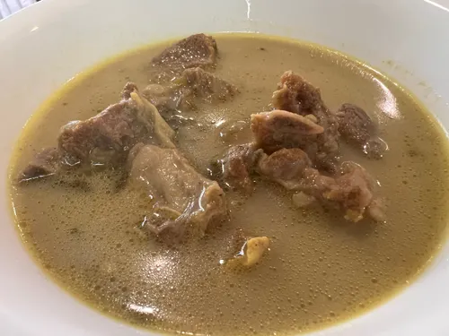

Home
Marag

Description
Marag is a traditional Arabian/Gulf meat soup or stew, particularly
popular in Saudi Arabia and Yemen. It features tender meat (lamb, chicken,
or beef) simmered in a richly spiced broth with vegetables. The broth is
infused with warm spices like cinnamon, cardamom, and black lime (loomi),
creating a comforting and aromatic dish typically served over rice.
Ingredients
- 2.2 pounds lamb or chicken (bone-in, cut into pieces)
- 2 pieces onions (quartered)
- 3 pieces tomatoes (quartered)
- 3 pieces carrots (cut into chunks)
- 3 pieces potatoes (quartered)
- 2 pieces zucchini (cut into chunks)
- 6 pieces garlic cloves (whole)
- 3 pieces dried black lime (loomi), pierced
- 2 pieces cinnamon stick
- 6 pieces cardamom pods
- 3 pieces bay leaves
- 4 pieces whole cloves
- 2 teaspoons cumin powder
- 1 teaspoons coriander powder
- 1 teaspoons turmeric powder
- 1 teaspoons black pepper
- 2 teaspoons salt
- 10 cups water
- 3 tablespoons ghee or oil
- 0.3 cups fresh cilantro (chopped)
- 3 cups basmati rice (cooked, for serving)
Steps
-
Brown the meat: Heat 3 tablespoons ghee or oil in a large pot over
medium-high heat. Add 2.2 pounds lamb or chicken (bone-in, cut into
pieces) and brown on all sides for about 10 minutes . Remove and set
aside.
-
Build the broth: In the same pot, add 2 pieces onions (quartered) and
sauté for 3 minutes . Return the meat to the pot and add 10 cups water,
3 pieces dried black lime (loomi), pierced, 2 pieces cinnamon stick, 6
pieces cardamom pods, 3 pieces bay leaves, 4 pieces whole cloves, 2
teaspoons cumin powder, 1 teaspoons coriander powder, 1 teaspoons
turmeric powder, 1 teaspoons black pepper, and 2 teaspoons salt.
-
Simmer the meat: Bring to a boil, then reduce heat to low. Cover and
simmer for 90 minutes (for chicken) or 1.5-2 hours (for lamb) until meat
is tender. Skim foam from the surface occasionally.
-
Add vegetables: Add 3 pieces tomatoes (quartered), 3 pieces carrots (cut
into chunks), 3 pieces potatoes (quartered), 2 pieces zucchini (cut into
chunks), and 6 pieces garlic cloves (whole) to the pot. Continue
simmering for 22m 30s until vegetables are tender but not mushy.
-
Adjust seasoning: Taste the broth and adjust salt and pepper as needed.
Remove and discard the whole spices (cinnamon sticks, cardamom pods, bay
leaves, cloves, and black limes) if desired.
-
Finish and serve: Stir in 0.3 cups fresh cilantro (chopped). Serve hot
in bowls over 3 cups basmati rice (cooked, for serving), or serve rice
on the side. Ladle the meat, vegetables, and broth together. Garnish
with extra cilantro.
Black lime (loomi) is essential for authentic flavor - find it at Middle
Eastern stores. You can substitute with regular lime zest and juice if
needed. Marag tastes even better the next day as flavors develop. Serve
with rice and Arabic bread.